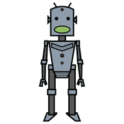
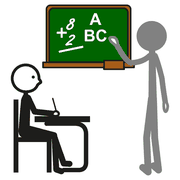
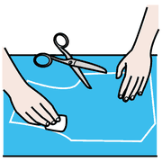
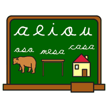
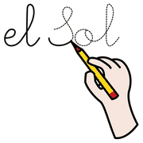

Modulo 12, coinvolgere e innovare
Intelligenza artificiale a scuola
Da dove viene, che cosa può fare per l'inclusione, come introdurla con criterio e quali domande etiche porta con sé.
L'IA oggi
 computer
computer
robot parlare
parlare| Ambito | Cosa fa |
|---|---|
| Apprendimento automatico | Il computer impara dai dati senza istruzioni esplicite. |
| Linguaggio naturale | Capisce e produce il linguaggio umano. |
| Visione artificiale | Riconosce e interpreta immagini e video. |
| Robotica | Robot capaci di compiti sempre più complessi. |
perché ci
riguarda
IA e inclusione
 tutti
tutti aiutare
aiutare
imparareComunicazione: nuovi sistemi di CAA
Lettura: sintesi vocale e descrizione delle immagini
Personalizzazione: contenuti adattati a ciascuno
Mobilità: controllo e navigazione per chi ha disabilità motorie
A scuola l'IA può anche dare riscontri immediati, aiutare l'insegnante ad analizzare i dati e ampliare l'accesso a chi vive lontano o ha una disabilità.
anche il
regolamento
d'istituto!
Come introdurla
 insegnante
insegnante spiegarecomputer
spiegarecomputer- FormazioneI docenti imparano a integrarla nella didattica.
- Scelta degli strumentiAffidabili e adatti ai bisogni della scuola.
- Integrazione gradualeSenza sostituire la relazione umana.
- ValutazioneSi verifica regolarmente l'effetto sull'apprendimento.
- EticaPrivacy, equità e sicurezza degli studenti.
Esempi d'uso
 scrivere
scrivere
disegnare
lingue| Strumento | Come usa l'IA |
|---|---|
| Khan Academy | Percorsi personalizzati e riscontro immediato. |
| Duolingo | Lezioni adattate al livello di ciascuno. |
| Google Classroom | Automatizza compiti ripetitivi e analizza i dati. |
| Tecnologie assistive | Aiutano a leggere, scrivere e comunicare. |
Limiti ed etica
 attenzione
attenzione sbagliare
sbagliare privato
privato
controllareLe sfide
- Privacy dei dati degli studenti
- Equità: evitare pregiudizi
- Accesso: il divario tecnologico
- Relazione: l'IA non sostituisce le persone
- Costi di strumenti e formazione
Le domande etiche
- Il sistema è trasparente e spiegabile?
- È equo, senza discriminazioni?
- I dati sono protetti?
- Chi risponde delle decisioni prese con l'IA?
L'IA cambierà il modo in cui impariamo. Il compito della scuola è sceglierne l'uso, non subirlo.